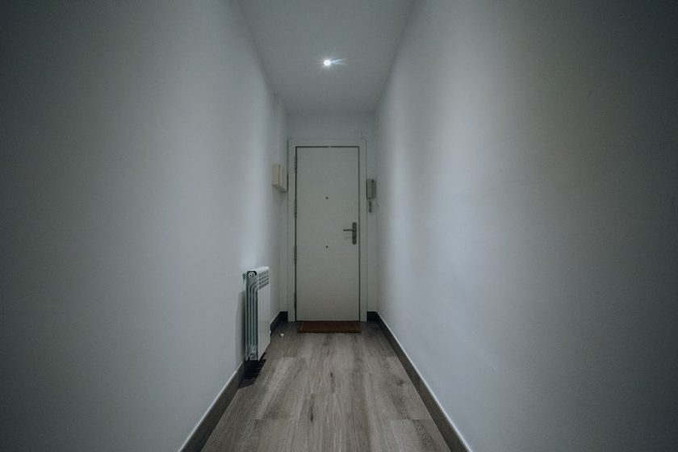

In Praise of a Quiet House
On rooms without a soundtrack, and what the mind does when nothing is filling the silence.

Most houses have a soundtrack now, even when no one meant to put one there. A podcast trails from the kitchen while dinner gets made. A show plays to an empty room because the room felt strange without it. A phone sits on the counter with something looping quietly in the background, half-listened-to, fully present. None of this is dramatic. It happens by default, the way a light switches on when you walk into a room. But it means a lot of houses are never actually quiet, and a lot of people have forgotten what that used to sound like.
The house that used to go quiet
Older houses, or older versions of the houses we live in now, had stretches of true quiet built into them. A radio that got turned off at the end of a program instead of streaming into the next one. A television with three channels and a signal that ended for the night. Silence wasn't a void to be managed — it was just what happened between things. You cooked in it. You folded laundry in it. You sat at a table in it, sometimes bored, sometimes just present, and neither of those felt like a problem that needed solving.
That kind of silence is harder to find on purpose now, mostly because it's easier than ever to avoid it by accident. There's always something to put on. The friction of silence used to be built into the technology; now the friction runs the other way, and quiet takes a small, deliberate act to reach.
What background media actually does
It's worth being specific about what's happening when a show or a podcast plays in the background of an evening. The content itself may be gentle, even genuinely good. The issue isn't the show. It's that a portion of attention is now reserved for it, low and steady, whether or not anyone is watching. Even unwatched, background media asks something of the mind — a low hum of tracking, a readiness to glance up if something changes. That reserved attention is attention that isn't available for anything else: for noticing the room, for a stray thought to finish itself, for the specific, unbothered feeling of doing one thing without narration running underneath it.
This is closely related to what happens when a person switches tasks too often during work — a small tax gets paid every time, and it adds up in ways that are easy to underestimate. The essay on attention residue goes into this more directly, but the home version of it is quieter and less discussed: a house that never goes silent is a house where attention is always slightly divided, even during the hours meant for rest.
What a quiet room makes room for
The case for a quiet house isn't that noise is bad. It's that constant, low-grade sound narrows what a room can hold. Silence, by contrast, seems to leave space for things that don't announce themselves — a half-formed idea, the specific quality of afternoon light, the sound of someone else in the house doing something entirely unrelated. People who spend time in genuinely quiet rooms often describe a kind of settling, as if the nervous system had been bracing against something without quite knowing it, and the bracing eases when the something stops.
- A kitchen without a show running tends to surface small noticing — the sound of water, the smell of something cooking — that background media usually covers over.
- A quiet commute home, even a short one, tends to leave people readier for the evening than one filled with input the whole way. The piece on the unhurried commute covers this in more detail.
- An evening with long stretches of no media at all often makes the one show or one song that does get chosen feel more deliberate, and more enjoyed.
A house doesn't need to be silent to feel quiet. It needs long enough stretches without a soundtrack that silence stops feeling like something missing.
The discomfort is often the point
Anyone who has tried to sit in a quiet room after months of background noise knows the first ten minutes can feel restless, even faintly uncomfortable. That discomfort tends to get read as a sign that the silence isn't working — that something should be put on to fix it. It may instead be a sign of how unfamiliar plain quiet has become. Attention that's used to being fed tends to protest a little when the feeding stops, the same way a body used to constant motion feels strange the first time it sits still. The restlessness usually passes on its own, given a few minutes and no rush to end it.
A note on total silence
None of this is an argument for total, permanent silence, or for treating every sound as an intrusion. A house with people in it has footsteps, running water, the occasional burst of laughter — that's not the kind of noise this essay is about. The distinction is between a life that includes ordinary sound and a life with a near-constant media layer running underneath it. The first is simply a house being lived in. The second is closer to a soundtrack that's been on so long no one remembers choosing it.
A few starting points
Building in quiet doesn't require silencing a whole house at once. A few smaller shifts tend to be easier to sustain and easier to notice the effect of.
| Room or moment | Common default | A quieter alternative |
|---|---|---|
| Morning routine | News or a show playing while getting ready | The same routine with no audio at all, even once a week |
| Cooking dinner | Podcast or video running in the background | Music with no talking, or nothing, for one meal a week |
| Commute or errands | Something playing the entire way | The first or last five minutes left quiet |
| Before bed | A show as a wind-down habit | A period of reading on paper instead, lamp only |
| Weekend mornings | Phone or television on from the first minutes awake | An hour with no screens or audio before either goes on |
Living with the quiet, not managing it
The goal isn't to turn a house into a monastery, or to treat every sound as a failure of discipline. It's closer to what a slow morning does for the start of a day — covered in the essay on a slow first hour — except applied to the ordinary rooms of a house instead of the first waking minutes. A little unfilled space, held on purpose, tends to change how a room feels to be in, not because silence is inherently better than sound, but because a house that's never quiet leaves nowhere for a mind to simply rest. The app referenced on this site, Stillhour, is one small tool some readers use to mark out that kind of unfilled time on purpose, though the practice itself doesn't require any tool at all — just a willingness to leave a room alone for a while.